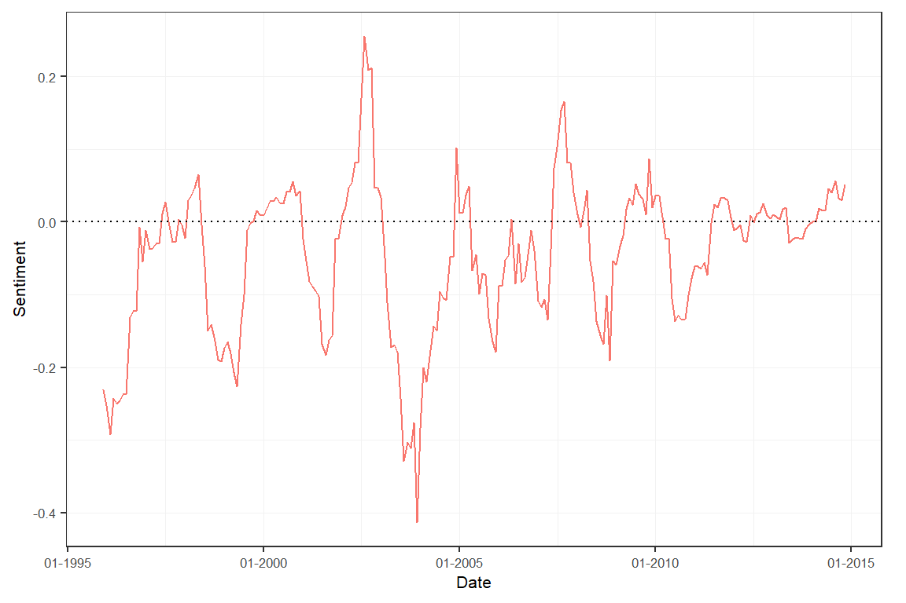

In this application, we create (a sentiment-adjusted version of) the well-known Economic Policy Uncertainty (EPU) index, which fits very will within the package’s framework.
data("usnews") corpus <- sento_corpus(usnews[, c("id", "date", "texts", "wsj", "wapo")])
sento_lexicons objectkeywords <- list( E = c("economy", "economic"), P = c("congress", "legislation", "white house", "regulation", "deficit", "federal reserve"), U = c("uncertainty", "uncertain") ) keywords_dt <- lapply(keywords, function(kw) data.table(x = kw, y = 1)) lex <- sento_lexicons(keywords_dt)
s <- compute_sentiment(corpus, lex, "counts")
sentiment objectsA <- s[, 1:3] sB <- s[, -c(1:3)] to_epu <- function(x) as.numeric(rowSums(x > 0) >= 2) # >= 3 is too strict for this corpus sB[, "EPU--wsj" := to_epu(.SD), .SDcols = endsWith(colnames(sB), "wsj")] sB[, "EPU--wapo" := to_epu(.SD), .SDcols = endsWith(colnames(sB), "wapo")] s2 <- as.sentiment(cbind(sA, sB[, c("EPU--wsj", "EPU--wapo")]))
w <- data.frame("simple" = c(rep(0, 11), 1), "linear" = weights_exponential(12, alphas = 10^-10)[, 1]) ctr <- ctr_agg(howDocs = "equal_weight", do.ignoreZeros = FALSE, howTime = "own", by = "month", lag = 12, weights = w) sm <- aggregate(s2, ctr)
dt <- as.data.table(subset(sm, date < "2005-01-01")) sds <- apply(dt[, -1], 2, sd) sm2 <- scale(sm, center = FALSE, scale = sds/100) subset(sm2, date < "2005-01-01")[["stats"]]
## EPU--wsj--simple EPU--wapo--simple EPU--wsj--linear EPU--wapo--linear
## mean 96.1926353 76.9955241 319.1703100 271.85568619
## sd 100.0000000 100.0000000 100.0000000 100.00000000
## max 380.3967953 389.0856498 644.9521817 526.74844061
## min 0.0000000 0.0000000 179.4097421 93.69645949
## meanCorr 0.1047356 0.1347121 0.1217423 0.08630789corpus <- sento_corpus(usnews[, c("id", "date", "texts", "wsj", "wapo")])
corpus <- add_features(corpus, keywords = keywords, do.binary = TRUE) dv <- as.data.table(docvars(corpus)) dv[, EPU := to_epu(.SD), .SDcols = c("E", "P", "U")]
# compute total number of articles per journal and month totArticles <- dv[, date := format(date, "%Y-%m")][, lapply(.SD, sum), by = date, .SDcols = c("wsj", "wapo")] setnames(totArticles, c("wsj", "wapo"), c("wsjT", "wapoT")) dv <- merge(dv, totArticles, by = "date") dv[, c("wsj", "wapo") := list((wsj * EPU) / wsjT, (EPU * wapo) / wapoT)] for (j in which(colnames(dv) %in% c("wsj", "wapo"))) # replace NaN and Inf values due to zero division set(dv, which(is.na(dv[[j]]) | is.infinite(dv[[j]])), j, 0) corpus <- add_features(corpus, featuresdf = dv[, c("wsj", "wapo", "EPU")])
corpus <- corpus_subset(corpus, EPU == 1) docvars(corpus, c("E", "P", "U", "EPU")) <- NULL
sentLex <- sento_lexicons(sentometrics::list_lexicons[c("GI_en")]) ctr <- ctr_agg("counts", "equal_weight", "equal_weight", by = "month", lag = 12) sm <- sento_measures(corpus, sentLex, ctr) sm2 <- aggregate(sm, features = list(journals = c("wsj", "wapo"))) plot(sm2)
